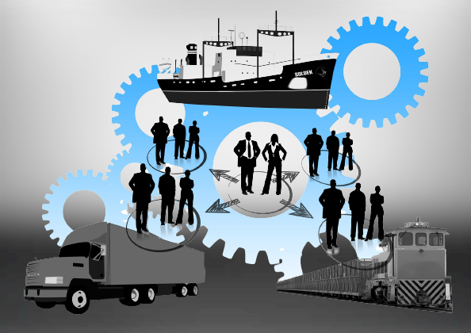

Gestión de Producción y Operaciones

¿En qué consiste?
La gestión de producción y operaciones es una disciplina empresarial que se enfoca en planificar, coordinar y supervisar los procesos involucrados en la fabricación de productos o la prestación de servicios. Incluye actividades como la planificación de la producción, la gestión de inventarios, la programación de la producción, el aseguramiento de la calidad y la mejora continua de los procesos. Se divide en algunas etapas que son Planificación Estratégica, Diseño del Producto o Servicio, Planificación de la Producción, Adquisición de Recursos, Producción y Operaciones, Control de Calidad, Gestión de Inventarios, Distribución y Logística, Mejora Continua, Evaluación y Control. Se refiere a la administración y planificación de los procesos y sistemas de producción y operaciones en una empresa. En otras palabras, es la rama del negocio que se ocupa de organizar la producción y los procesos de la empresa para que estén eficientes y se cumplan los objetivos de la empresa.